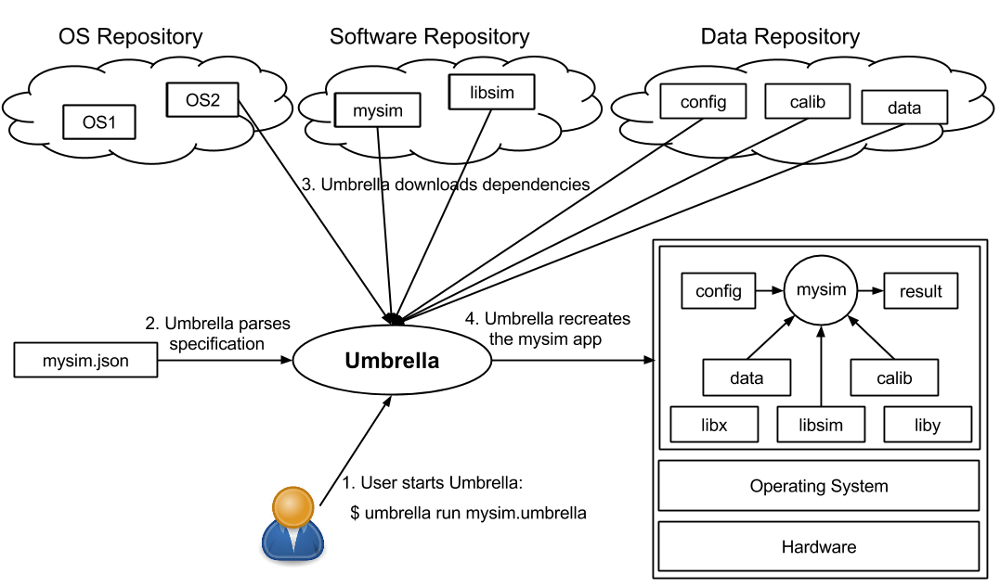
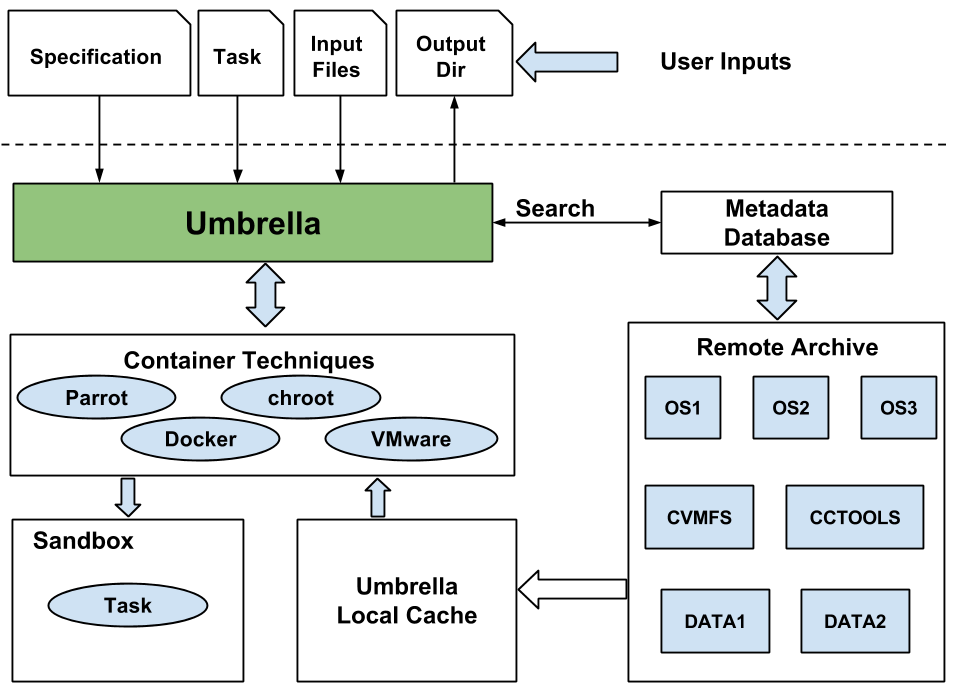

Umbrella User's Manual
Last edited: May 2015
Umbrella is Copyright (C) 2015 The University of Notre Dame.
All rights reserved.
This software is distributed under the GNU General Public License.
See the file COPYING for details.
Please use the following citation for Umbrella in a scientific publication:
- Haiyan Meng and Douglas Thain, Umbrella: A Portable Environment Creator for Reproducible Computing on Clusters, Clouds, and Grids, Workshop on Virtualization Technologies in Distributed Computing (VTDC) at HPDC, June, 2015. DOI: 10.1145/2755979.2755982
Overview⇗
Umbrella is a tool for specifying and materializing comprehensive execution environments, from the hardware all the way up to software and data. A user simply invokes Umbrella with the desired task, and Umbrella parses the specification, determines the minimum mechanism necessary to run the task, downloads missing dependencies, and executes the application through the available minimal mechanism, which may be direct execution, a system container (Docker, chroot, Parrot), a local virtual machine (i.e., VMware), or submission to a cloud environment (i.e., Amazon EC2) or grid environment (i.e., Condor). The following figure shows the overview of Umbrella.
The architecture of Umbrella is shown in the figure below.
Umbrella contains five parts: user inputs, Umbrella, underlying execution engines, remote archive and metadata database. User inputs include the specification, the task command, the input files, and the output directory. Umbrella connects the user's execution environment specification with the underlying execution engines, which includes local resources, clusters, cloud resources, and grid resources. The remote archive stores the OS images, software dependencies and data dependencies. The metadata database maintains the mapping relationship between the dependency name referred in the specification and the actual storage location within the remote archive.
Currently, Umbrella supports three execution engines: local, condor, ec2. Local execution engine can be further devided into three categories: parrot, docker, chroot. Parrot execution engine can be used without any special authority on the host machine; Docker execution engine requires Docker is installed on the host machine and the user is given the right authority to use Docker; chroot execution engine requires the user to be the root user.
To get started using Umbrella, please begin by installing CCTools on your system. When you are ready, proceed with the Have a Try section below. If you are interested in running your CMS applications through Umbrella, proceed with the Try CMS Applications with Umbrella.
If you want to construct umbrella specification for your own application, proceed with the Create Your Specification section below.
Note: Both Condor and Docker can not work together with AFS. If you try to use the condor and Docker execution engine of Umbrella, please do not install CCTools on your AFS directory.
Have a Try⇗
The part uses a Ray-Tracing application as an example to illustrate how to execute an application with Umbrella. The --packages option and the --ec2 option are both not set in the following command, so the default metadata database and the default ec2 metadata database will be downloaded and used on the execution node during runtime.
The specification for the application is povray.umbrella:
{
"comment": "A ray-tracing application which creates video frames.",
"hardware": {
"arch": "x86_64",
"cores": "2",
"memory": "2GB",
"disk": "3GB"
},
"kernel" : {
"name": "linux",
"version": ">=2.6.18"
},
"os": {
"name": "Redhat",
"version": "5.10"
},
"software": {
"povray-3.6.1-redhat5-x86_64": {
"id": "9b7f2362e6b927c8ef08c3f92599e47c",
"mountpoint": "/software/povray-3.6.1-redhat5-x86_64",
"action": "unpack"
}
},
"data": {
},
"environ": {
}
}
There are two input files 4_cubes.pov
and WRC_RubiksCube.inc.
The expected output of the ray-tracing command is a png file named frame000.png.
The command for this application is:povray +I4_cubes.pov +Oframe000.png +K.0 -H50 -W50
Suppose you do your umbrella test under
/tmp/umbrella. First download the specification and the two input
files into /tmp/umbrella.
The umbrella command for Parrot execution engine:
umbrella \
--sandbox_mode parrot \
--log umbrella.log \
--config povray.umbrella \
--inputs '4_cubes.pov=4_cubes.pov,WRC_RubiksCube.inc=WRC_RubiksCube.inc' \
--localdir /tmp/umbrella_test/ \
--output /tmp/umbrella_test/parrot_povray \
run "povray +I4_cubes.pov +Oframe000.png +K.0 -H50 -W50"
After this umbrella command is finished, you can find the output file, frame000.png, in the output directory, /tmp/umbrella_test/parrot_povray. The output png file should look like:
You can check the help document of umbrella for the option settings by running the command: umbrella -h
You can try other execution engines following the instructions in the Different Execution Engines of Umbrella section.
To construct umbrella specification for your own application, proceed with the Create Your Specification section below.
Try CMS Applications with Umbrella⇗
The part uses a CMS application as an example to illustrate how to execute a CMS application with Umbrella. The --packages option and the --ec2 option are both not set in the following command, so the default metadata database and the default ec2 metadata database will be downloaded and used on the execution node during runtime.
The specification for the application is cms_complex.umbrella:
{
"comment": "a CMS application whose software dependencies are all from CVMFS, and whose data dependencies are not from CVMFS.",
"hardware": {
"arch": "x86_64",
"cores": "2",
"memory": "2GB",
"disk": "3GB"
},
"kernel" : {
"name": "linux",
"version": ">=2.6.32"
},
"os": {
"name": "Redhat",
"version": "6.5"
},
"software": {
"cmssw-5.2.5-slc5_amd64": {
"mountpoint": "/cvmfs/cms.cern.ch"
}
},
"data": {
"final_events_2381.lhe": {
"mountpoint": "/tmp/final_events_2381.lhe",
"action": "none"
}
},
"environ": {
"CMS_VERSION": "CMSSW_5_2_5",
"SCRAM_ARCH": "slc5_amd64_gcc462"
}
}
The CMS analysis code is cms_complex.sh:
#!/bin/sh
rm -rf sim_job
mkdir sim_job
cd sim_job
. /cvmfs/cms.cern.ch/cmsset_default.sh
scramv1 project -f CMSSW ${CMS_VERSION}
cd ${CMS_VERSION}
eval `scram runtime -sh`
cd ..
cmsDriver.py Hadronizer_MgmMatchTuneZ2star_8TeV_madgraph_cff.py -s GEN \
--eventcontent=RAWSIM --datatier GEN -n 10 \
--filein=file:/tmp/final_events_2381.lhe \
--filetype=LHE --conditions=START52_V9::All
The analysis code will create a directory called sim_job and put the CMSSW software dependencies under it.
The expected output of the CMS application is a png file named frame000.png.
The command for this application is:/bin/sh cms_complex.sh
Suppose you do your umbrella test under
/tmp/umbrella. First download the specification and the CMS analysis code
file into /tmp/umbrella.
The umbrella command for Parrot execution engine:
umbrella \
--sandbox_mode parrot \
--log umbrella.log \
--config cms_complex.umbrella \
--inputs 'cms_complex.sh=cms_complex.sh' \
--localdir /tmp/umbrella_test/ \
--output /tmp/umbrella_test/parrot_cms_complex_output \
--cvmfs_http_proxy http://cache01.hep.wisc.edu:3128 \
run '/bin/sh cms_complex.sh'
After umbrella finishes executing the CMS application, you can see the analysis result:
21-May-2015 11:05:45 EDT Initiating request to open LHE file file:/tmp/final_events_2381.lhe
21-May-2015 11:05:45 EDT Successfully opened LHE file file:/tmp/final_events_2381.lhe
Begin processing the 1st record. Run 1, Event 1, LumiSection 1 at 21-May-2015 11:05:45.202 EDT
Begin processing the 2nd record. Run 1, Event 2, LumiSection 1 at 21-May-2015 11:05:45.204 EDT
Begin processing the 3rd record. Run 1, Event 3, LumiSection 1 at 21-May-2015 11:05:45.210 EDT
Begin processing the 4th record. Run 1, Event 4, LumiSection 1 at 21-May-2015 11:05:45.214 EDT
Begin processing the 5th record. Run 1, Event 5, LumiSection 1 at 21-May-2015 11:05:45.216 EDT
Begin processing the 6th record. Run 1, Event 6, LumiSection 1 at 21-May-2015 11:05:45.235 EDT
Begin processing the 7th record. Run 1, Event 7, LumiSection 1 at 21-May-2015 11:05:45.244 EDT
Begin processing the 8th record. Run 1, Event 8, LumiSection 1 at 21-May-2015 11:05:45.248 EDT
Begin processing the 9th record. Run 1, Event 9, LumiSection 1 at 21-May-2015 11:05:45.249 EDT
Begin processing the 10th record. Run 1, Event 10, LumiSection 1 at 21-May-2015 11:05:45.264 EDT
=============================================
MessageLogger Summary
type category sev module subroutine count total
---- -------------------- -- ---------------- ---------------- ----- -----
1 fileAction -s AfterSource 2 2
type category Examples: run/evt run/evt run/evt
---- -------------------- ---------------- ---------------- ----------------
1 fileAction BeforeEvents BeforeEvents
Severity # Occurrences Total Occurrences
-------- ------------- -----------------
System 2 2
The analysis directory sim_job will be put in the output directory,
/tmp/umbrella_test/parrot_cms_complex_output.
You can check the help document of umbrella for the option settings by running the command: umbrella -h
For more information about the Umbrella support for CMS applications, please check the Umbrella Support for CMS Application section.
You can try other execution engines following the instructions in the Different Execution Engines of Umbrella section.
To construct umbrella specification for your own application, proceed with the Create Your Specification section below.
Create Your Specification⇗
By default, metadata of all the software, data and OS dependencies is stored in the metadata database, which is a JSON file. To use Umbrella, you should first check this metadata database to see whether it covers all the dependencies of your application. If the metadata database does not include all the dependencies of your application, please check the Prepare the Remote Archive and the Metadata Database section.
Like the metadata database file, the Umbrella specification for an application is also a JSON file. Here is the specification file for a Ray-Tracing application:
{
"hardware": {
"arch": "x86_64",
"cores": "2",
"memory": "2GB",
"disk": "10GB"
},
"kernel" : {
"name": "linux",
"version": ">=2.6.18"
},
"os": {
"name": "Redhat",
"version": "5.10"
},
"software": {
"povray-3.6.1-redhat5-x86_64": {
"id": "9b7f2362e6b927c8ef08c3f92599e47c",
"mountpoint": "/software/povray-3.6.1-redhat5-x86_64",
"action": "unpack"
}
},
"data": {
},
"environ": {
"PATH": "/usr/kerberos/sbin:/usr/kerberos/bin:/usr/local/sbin:/usr/local/bin:/sbin:/bin:/usr/sbin:/usr/bin:/root/bin"
}
}
An Umbrella specification includes 6 parts: hardware, kernel, os, software, data, and environ.
hardware Section (required):
- arch (required): the hardware architecture the application needs to run on. Options: x86_64, i386, i686. Current support options: x86_64. Not case sensitive.
- cores (optional): the number of cores the applications needs. Options: 1, 2, 3, 4, ...
- memory (optional): the memory space the application needs in the unit of GB. Options: 1GB, 2GB, .... Not case sensitive.
- disk (optional): the disk space the application needs in the unit of GB. Options: 1GB, 2GB, .... Not case sensitive.
kernel Section (required):
- name (required): the kernel type the application requires. Options: linux, windows. Current support options: linux. Not case sensitive.
- version (required): the kernel version in the format of A.B.C (A: kernel version; B: major revision of the kernel; C: the minor revision of the kernel). You can specify this attribute to a single value like 2.6.18 or a range like >=2.6.18 or a range like [2.6.18, 2.6.32].
os Section (required):
- name (required): the OS name. Options: redhat, centos, arch, .... Not case sensitive.
- version (required): the OS version in the format of A.B: A is the main version number and B is the minor version number. Exmaples: 5.10, 6.5.
- id (optional): the id of the OS image. There may exist multiple OS images for redhat 5.10, the id attribute uniquely identifies a OS image. If this attribute is not provided in the specification and the OS version is redhat 5.10, the first OS image whose version is redhat 5.10 found in the packages.json will be used.
software Section (optional):
Each software dependency has a name, which corresponds to the name included in the metadata database.
- id (optional): the id of the software. There may exist multiple versions of a software like povray-3.6.1-redhat5-x86_64 due to the difference of complication settings. the id attribute uniquely identifies a software. If this attribute is not provided in the specification, the first version found in the packages.json will be used.
- mountpoint (required): the mountpoint of the software. Case sensitive.
- action (required): the action on the downloaded software dependencies. Options: none, unpack. none leaves the downloaded dedendency as it is. unpack uncompresses the depedency. Not case sensitive.
data Section (optional):
Each data dependency has a name, which corresponds to the name included in the metadata database.
- id (optional): the id of the data. There may exist multiple versions of a data. the id attribute uniquely identifies a data. If this attribute is not provided in the specification, the first version found in the packages.json will be used.
- mountpoint (required): the mountpoint of the data dependency. Case sensitive.
- action (required): the action on the downloaded data dependencies. Options: none, unpack. none leaves the downloaded dedendency as it is. unpack uncompresses the dependency. Not case sensitive.
environ Section (optional):
Each item is a key-value pair. For example, "HOME": "/home/hmeng", which sets the HOME environment variable used by the sandbox to execute the applicition. Case sensitive.
Different Execution Engines of Umbrella⇗
At runtime, Umbrella evaluates the local execution environment to see if it is compatible with the specification. Umbrella evaluates the hardware resources available, the kernel and OS distribution, and the software and data dependencies. It then selects the mechanism necessary to deliver the desired environment. In the case where Umbrella can not construct the desired environment on the local machine, the user will be notified.
Local Cache and Mounting Mechanism. One cache directory will be set on each execution node involved in the execution engine to avoid download the same data from the remote archive repeatedly. Umbrella downloads and caches OS images, software dependencies, and data dependencies in the host machine, and then creates a sandbox to execute the application. To enable software reusability by multiple users, Umbrella constructs the sandbox for each application through mounting-based sandbox techniques.
The following figure shows the relationship between the remote archive, the local cache and the sandbox for each application. Sandbox 1 uses the root filesystem of the host machine as the root filesystem and mounts the needed software and data dependencies (A and G) into it. Sandbox 2 needs to construct a separate root filesystem which groups together the needed OS image (C), software dependency (A).

The following parts uses a Ray-Tracing application as an example to illustrate how to use different execution engines of Umbrella to execute the application. The --packages option and the --ec2 option are both not set in the following command, so the default metadata database and the default ec2 metadata database will be downloaded and used on the execution node during runtime.
The specification for the application is povray.umbrella.
There are two input files 4_cubes.pov
and WRC_RubiksCube.inc.
The command for this application is:povray +I4_cubes.pov +Oframe000.png +K.0 -H50 -W50 Suppose you do your umbrella test under
/tmp/umbrella. First download the specification and the two input
files into /tmp/umbrella.
Execute your Application through Umbrella - Parrot⇗
The umbrella command for Parrot execution engine:
umbrella \
--sandbox_mode parrot \
--log umbrella.log \
--config povray.umbrella \
--inputs '4_cubes.pov=4_cubes.pov,WRC_RubiksCube.inc=WRC_RubiksCube.inc' \
--localdir /tmp/umbrella_test/ \
--output /tmp/umbrella_test/parrot_povray \
run "povray +I4_cubes.pov +Oframe000.png +K.0 -H50 -W50"
Execute your Application through Umbrella - Docker⇗
The umbrella command for Docker execution engine:
umbrella \
--sandbox_mode docker \
--log umbrella.log \
--config povray.umbrella \
--inputs '4_cubes.pov=4_cubes.pov,WRC_RubiksCube.inc=WRC_RubiksCube.inc' \
--localdir /tmp/umbrella_test/ \
--output /tmp/umbrella_test/docker_povray \
run "povray +I4_cubes.pov +Oframe000.png +K.0 -H50 -W50"
Don't do the Docker execution engine test under your AFS, it will fail due to the AFS ACL.
Execute your Application through Umbrella - chroot⇗
The umbrella command for chroot execution engine:
umbrella \
--sandbox_mode chroot \
--log umbrella.log \
--config povray.umbrella \
--inputs '4_cubes.pov=4_cubes.pov,WRC_RubiksCube.inc=WRC_RubiksCube.inc' \
--localdir /tmp/umbrella_test/ \
--output /tmp/umbrella_test/chroot_povray \
run "povray +I4_cubes.pov +Oframe000.png +K.0 -H50 -W50"
To test the root execution engine, you must have the root access authority.
Execute your Application through Umbrella - local⇗
The umbrella command for local execution engine:
umbrella \
--sandbox_mode local \
--log umbrella.log \
--config povray.umbrella \
--inputs '4_cubes.pov=4_cubes.pov,WRC_RubiksCube.inc=WRC_RubiksCube.inc' \
--localdir /tmp/umbrella_test/ \
--output /tmp/umbrella_test/local_povray \
run "povray +I4_cubes.pov +Oframe000.png +K.0 -H50 -W50"
The local execution engine of Umbrella first check whether Docker exists on the host machine, if yes, use docker execution engine; if not, use parrot execution engine. If your workstation has both AFS and Docker installed, you should avoid do the test under your AFS. The local execution engine just focuses on docker and parrot, ignoring chroot, because to render a task includes lots of mount and umount oprations, which are dangerous. If you really want to use chroot to finish your task, please set the --sandbox_mode option to be chroot.
Execute your Application through Umbrella - Condor⇗
The umbrella command for condor execution engine:
umbrella \
--sandbox_mode condor \
--log umbrella.log \
--condor_log umbrella.log.condor \
--config povray.umbrella \
--inputs '4_cubes.pov=4_cubes.pov,WRC_RubiksCube.inc=WRC_RubiksCube.inc' \
--localdir /tmp/umbrella_test/ \
--output /tmp/umbrella_test/condor_povray \
run "povray +I4_cubes.pov +Oframe000.png +K.0 -H50 -W50"
To test this, the machine you are using should have condor installed. Condor can not work together with AFS. So do NOT do your test on your AFS.
Execute your Application through Umbrella - EC2⇗
The umbrella command for ec2 execution engine:
umbrella \
--sandbox_mode ec2 \
--log umbrella.log \
--ec2_log umbrella.log.ec2 \
--ec2_sshkey ~/bin/feb272015.pem \
--ec2_key feb272015 \
--ec2_group 'sg-24f96141' \
--config povray.umbrella \
--inputs '4_cubes.pov=4_cubes.pov,WRC_RubiksCube.inc=WRC_RubiksCube.inc' \
--localdir /tmp/umbrella_test/ \
--output /tmp/umbrella_test/ec2_povray \
run "povray +I4_cubes.pov +Oframe000.png +K.0 -H50 -W50"
To test this, you must set up the Amazon EC2 command line interface tools on Linux.
If you try to use the id attribute in the os section of the specification to specify a unique OS image from the Amazon EC2, you need to check the EC2 metadata database section below, which uses an AMI as the id attribute.
Prepare the Remote Archive and the Metadata Database⇗
By default, metadata of all the software, data and OS dependencies is stored in the metadata database, which is a JSON file. To use Umbrella, you should first check this metadata database to see whether it covers all the dependencies of your application. If all the dependencies of your application is included in it, then you can proceed with the Create Your Specification section. If the metadata database does not include all the dependencies of your application, you can download the metadata database and add the metadata information of the missing dependencies into the specification. You can also recreate your own metadata database from scratch.
Here is an example of metadata database:"povray-3.6.1-redhat5-x86_64": {
"9b7f2362e6b927c8ef08c3f92599e47c": {
"source":[
"http://ccl.cse.nd.edu/research/data/hep-case-study/9b7f2362e6b927c8ef08c3f92599e47c/povray-3.6.1-redhat5-x86_64.tar.gz"
],
"format": "tgz",
"checksum": "9b7f2362e6b927c8ef08c3f92599e47c",
"size": "1.5MB"
},
"c9da9e46b3ce0f7f9885ce60077c45c5": {
"source":[
"http://ccl.cse.nd.edu/research/data/hep-case-study/c9da9e46b3ce0f7f9885ce60077c45c5/povray-3.6.1-redhat5-x86_64.tar.gz"
],
"format": "tgz",
"checksum": "c9da9e46b3ce0f7f9885ce60077c45c5",
"size": "1.5MB"
}
},
"redhat-5.10-x86_64": {
"62aa9bc37afe3f738052da5545832c80": {
"source": [
"http://ccl.cse.nd.edu/research/data/hep-case-study/62aa9bc37afe3f738052da5545832c80/redhat-5.10-x86_64.tar.gz"
],
"format": "tgz",
"checksum": "62aa9bc37afe3f738052da5545832c80",
"size": "480MB"
}
},
"final_events_2381.lhe": {
"cb9878132aad42e7db30eabd214be8e2": {
"source": [
"http://ccl.cse.nd.edu/research/data/hep-case-study/cb9878132aad42e7db30eabd214be8e2/final_events_2381.lhe"
],
"format": "plain",
"checksum": "cb9878132aad42e7db30eabd214be8e2",
"size": "18MB"
}
}
The name of a software dependency is in the format of 'A-B-C-D', where A is the software name, B is the software version, C is OS distro name, D is hardware architecture. povray-3.6.1-redhat5-x86_64 is an example of this category.
The name of an OS image dependency is in the format of 'A-B-C', where A is the OS name, B is the OS version, C is hardware architecture. redhat-5.10-x86_64 is an example of this category.
There is no special limitation on the name of a data dependency. final_events_2381.lhe is an example of this category.
Multiple Packages for One Dependency. According to the building and compilation settings, there may be multiple packages for one dependency. In this case, all the packages for one dependency will be organized together and the `id` attribute of each package will be used as item key to differentiate different packages. For example, for the software dependency povray-3.6.1-redhat5-x86_64, there are two different packages: one with the id of 9b7f2362e6b927c8ef08c3f92599e47c and one with the id of c9da9e46b3ce0f7f9885ce60077c45c5.
Each OS, software and data package includes four attributes: source, checksum, size and format.
- source: a list of storage location of the dependency, which includes one or more resource URL. Each URL can be a local file path like file:///etc/hosts, or a https/http URL as shown in the example. Case sensitive. The first source will be first tried, if fails, then the second source will be tried, and so on.
- checksum: the checksum of the dependencies. Currently Umbrella only supports md5 checksum.
- size: the size of the dependency. Not case sensitive.
- format: the perservation format of the dependency. Currently Umbrella supports two formats: tgz (gzip compressed tarball) and plain (plain text).
Relationship of id and checksum. The id and checksum of each package in the archive are identical in our implementation of metadata database. However, it is not necessary for them to be identical to each other. You can implement your metadata database in a different semantics once the id of each package is unique for one dependency.
Organization of the Local Cache. Within the local cache, the id of
each package dependency will be used to create a directory under the
<localdir>/cache, then the package will be put into
<localdir>/cache/<id
Organization of the Remote Archive. Within the remote archive, to differentiate multiple packages for the same dependency and the different dependencies, a directory with the name of the checksum of each package will be created and functions as the direct parent directory of the package. Therefore, in the remote archive, there is a directory named 9b7f2362e6b927c8ef08c3f92599e47c, under which exists povray-3.6.1-redhat5-x86_64.tar.gz However, the organization of the remote archive can be in other format, once you have a way to differentiate the packages.
If you want to customize your own metadata database, please follow the requirements above and then tell umbrella through --packages option to use your own metadata database.
EC2 Metadata Database⇗
When the ec2 execution engine is used, Umbrella tries to map the specification into an AMI and an EC2 instance type with the help of the EC2 metadata database, which is a JSON file and can be specified by the --ec2 option of Umbrella. If the --ec2 is not set, the default EC2 metadata database will be downloaded and used on the execution node during runtime.
Here is an example of an EC2 metadata database:
{
"redhat-6.5-x86_64": {
"ami-2cf8901c": {
"ami": "ami-2cf8901c",
"root_device_type": "ebs",
"virtualization_type": "papavirtual",
"user": "ec2-user"
}
},
"redhat-5.10-x86_64": {
"ami-d76a29e7": {
"ami": "ami-d76a29e7",
"root_device_type": "ebs",
"virtualization_type": "hvm",
"user": "root"
}
},
"instances": {
"m1.large": {
"cores": "4",
"memory": "2GB",
"disk": "20GB"
}
}
...
}
There are two types of items in an EC2 metadata: OS images and instance types.
The name of an OS image shares the same specification with the name used in the general metadata database. There may exist multiple versions of images for an OS like redhat-5.10-x86_64. An identifier of each version is needed to differentiate these versions and function as the name of each OS image version. Currently, the AMI is used as the identifier. Correspondingly, the id attribute of the os section of an specification should also be an AMI.
An OS image includes four attributes:
- AMI (required): the Amazon Machine Image.
- root_device_type (optional): the type of the root device of the AMI.
- virtualization_type (optional): the type of virtualization technique used for the AMI. Currently Amazon supports two types of virtualization: paravirtual (PV) or hardware virtual machine (HVM).
- user (required): the user name used to connect to an instance.
The name of each instance type is the same as the one provided by the Amazon EC2(e.g., m1.large). Each instance type has three attributes:
- cores (required): the number of cores.
- memory (required): the memory space.
- disk (required): the disk space.
Umbrella Support for CMS Application⇗
As for CMS applications which need software from CVMFS, Umbrella first checks whether the execution node has CVMFS installed or not. If CVMFS is installed and its CMS repository is mounted as /cvmfs/cms.cern.ch, the application can run directly without the help from sandboxing techniques. If CVMFS is not installed or the mountpoint /cvmfs/cms.cern.ch is not found, Parrot will be used to help access software from CVMFS.
Here is an example of the umbrella specification for an CMS application, named cms_complex.umbrella:
{
"comment": "a CMS application whose software dependencies are all from CVMFS, and whose data dependencies are not from CVMFS.",
"hardware": {
"arch": "x86_64",
"cores": "2",
"memory": "2GB",
"disk": "3GB"
},
"kernel" : {
"name": "linux",
"version": ">=2.6.32"
},
"os": {
"name": "Redhat",
"version": "6.5"
},
"software": {
"cmssw-5.2.5-slc5_amd64": {
"mountpoint": "/cvmfs/cms.cern.ch"
}
},
"data": {
"final_events_2381.lhe": {
"mountpoint": "/tmp/final_events_2381.lhe",
"action": "none"
}
},
"environ": {
"CMS_VERSION": "CMSSW_5_2_5",
"SCRAM_ARCH": "slc5_amd64_gcc462"
}
}
Like other software dependencies, the dependency of CMSSW will be specified inside the software section of the specification, however, you only need to specify the mountpoint attribute. The id and action attributes for the CMSSW dependency will be ignored even if they are specified. In fact, the support for CMS applications are hardcoded inside the source code of Umbrella, not inside the metadata database.
Here is the CMS analysis code, named cms_complex.sh:
#!/bin/sh
rm -rf sim_job
mkdir sim_job
cd sim_job
. /cvmfs/cms.cern.ch/cmsset_default.sh
scramv1 project -f CMSSW ${CMS_VERSION}
cd ${CMS_VERSION}
eval `scram runtime -sh`
cd ..
cmsDriver.py Hadronizer_MgmMatchTuneZ2star_8TeV_madgraph_cff.py -s GEN \
--eventcontent=RAWSIM --datatier GEN -n 10 \
--filein=file:/tmp/final_events_2381.lhe \
--filetype=LHE --conditions=START52_V9::All
Once the application and its corresponding umbrella speficiation is ready, umbrella can be called to execute the application:
umbrella \
--sandbox_mode parrot \
--log umbrella.log \
--config cms_complex.umbrella \
--inputs 'cms_complex.sh=cms_complex.sh' \
--localdir /tmp/umbrella_test/ \
--output /tmp/umbrella_test/parrot_cms_complex_output \
--cvmfs_http_proxy http://cache01.hep.wisc.edu:3128 \
run '/bin/sh cms_complex.sh'
If you want to run this CMS application through Umbrella, please check the Try CMS Applications with Umbrella.